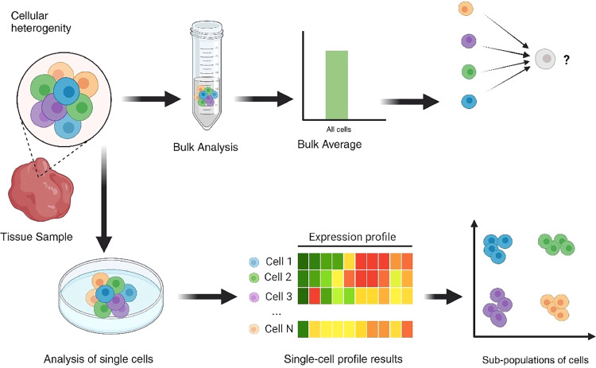
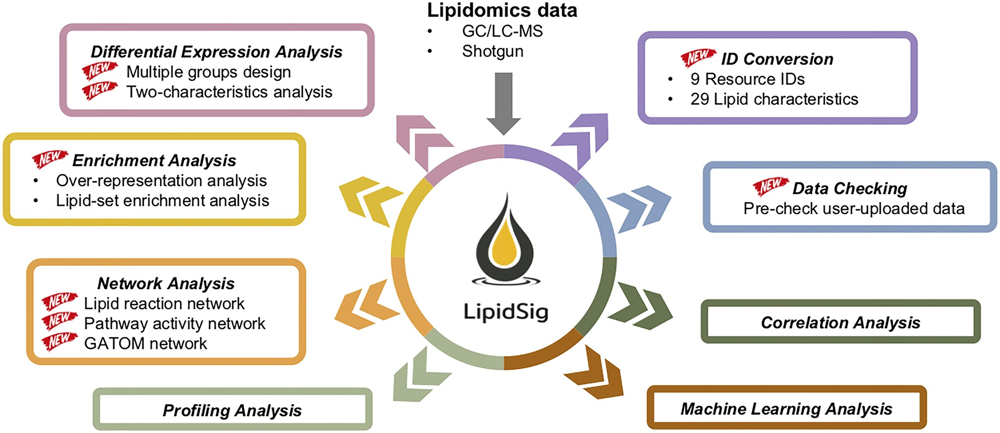
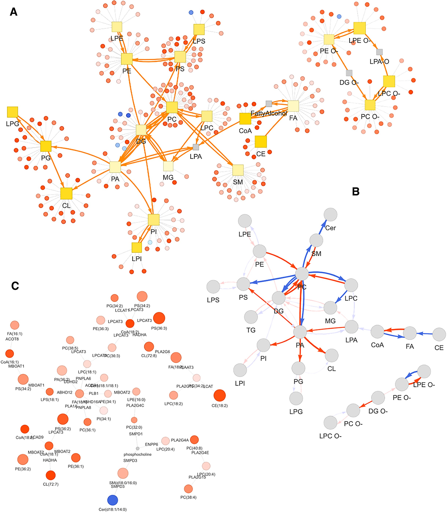
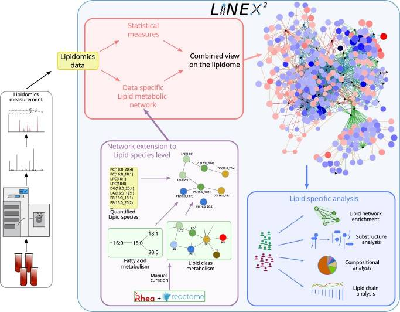
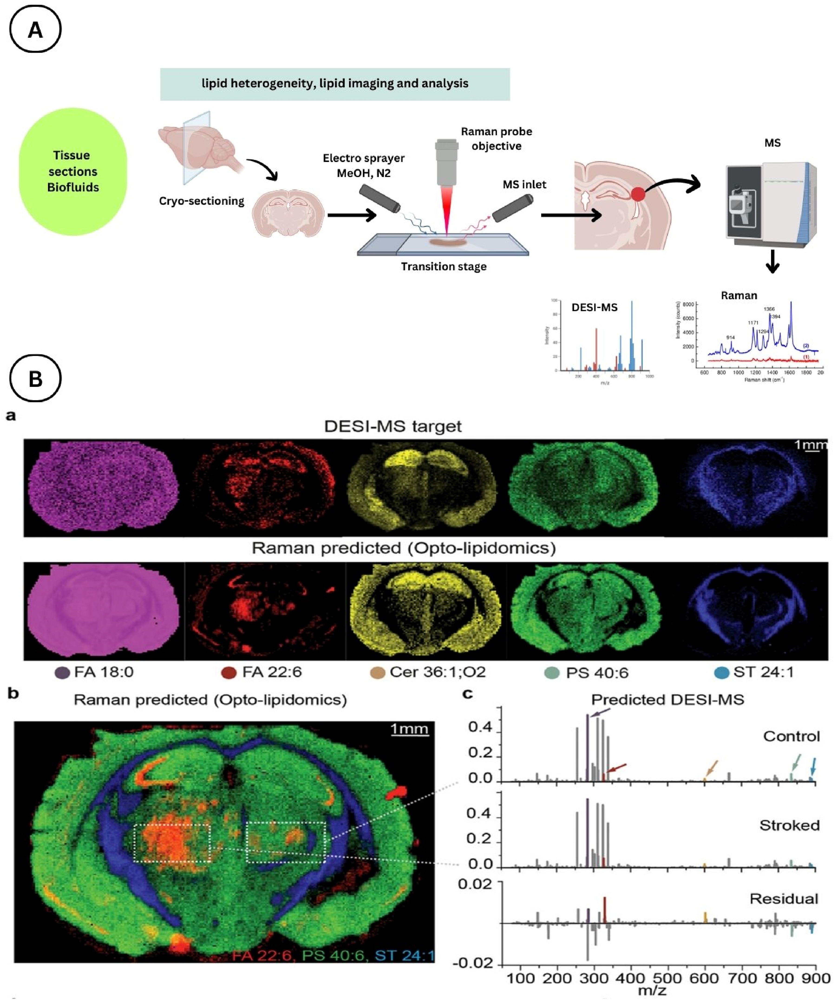
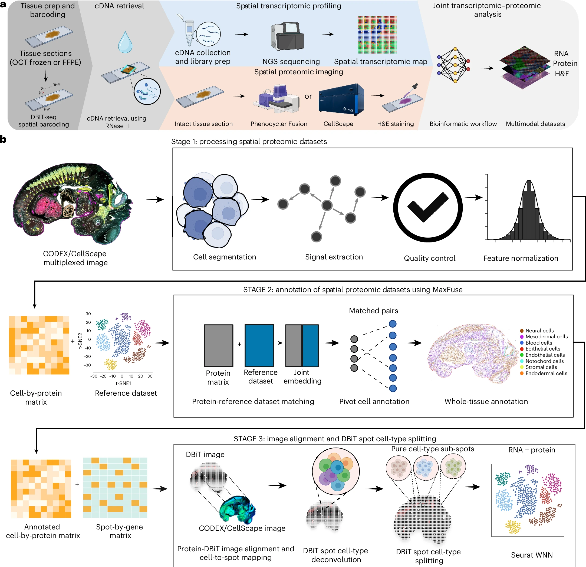
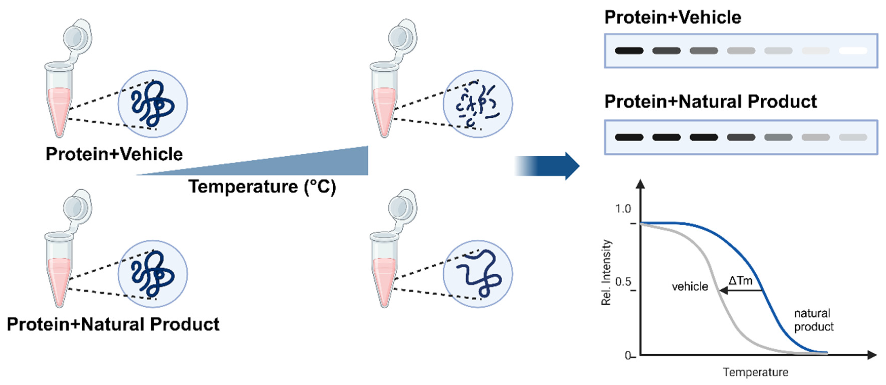
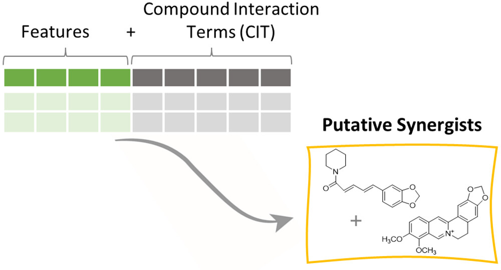

Research
Research
Interests
Defining how lipid–protein networks become dysregulated in aging and chronic inflammatory disease — and designing multi-target interventions that restore them toward healthier states.
My research operates in two complementary arms. The first uses multi-omics systems biology — integrating lipidomics, proteomics, phosphoproteomics, RNA sequencing, and spatial omics — to map how lipid composition and lipid–protein interaction networks reorganize across tissues and cell types during aging and chronic inflammatory disease. The goal is a quantitative, spatially resolved picture of where and how these networks fail.
The second applies herbal systems pharmacology to those network maps. Rather than optimizing a single target, I study how multi-component natural products perturb protein networks simultaneously — using proteome-wide thermal and structural stability profiling (CETSA-MS, LiP-MS, PELSA) under mixture conditions to resolve the distributed mechanisms of polypharmacology and emergent synergy. Together, the two arms form a closed loop: define how networks fail, then identify interventions that restore them.
Why Study Lipids?
The diversity of lipids is on the same order of magnitude as that of proteins, yet they remain far less studied than proteins or nucleic acids. They are not passive structural components — they are dynamic regulators of membrane organization, receptor function, organelle identity, and inflammatory signaling. Lipid composition shifts measurably with age, and dysregulation of specific lipid species and metabolic enzymes is increasingly recognized as a driver — not merely a consequence — of chronic inflammatory disease, neurodegeneration, and metabolic dysfunction. Despite this, most disease research still treats the lipidome as a downstream readout rather than a causal layer worth targeting directly.

Representative structures for the eight major lipid categories defined by the LIPID MAPS classification system — illustrating the structural diversity that underlies their distinct biological functions.
Licensed under CC BY 4.0.
Figure from:
Fahy, E., Subramaniam, S., Brown, H. A., Glass, C. K., Merrill, A. H., Murphy, R. C., Raetz, C. R. H., Russell, D. W., Seyama, Y., Shaw, W., Shimizu, T., Spener, F., van Meer, G., VanNieuwenhze, M. S., White, S. H., Witztum, J. L., & Dennis, E. A. (2005). A comprehensive classification system for lipids. Journal of Lipid Research, 46(5), 839–861.
https://doi.org/10.1194/jlr.E400004-JLR200 ↗
The WE Medicine Paradigm
Western medicine excels at reductionist precision — isolating single targets, developing potent selective compounds. But this approach has proven insufficient for complex, heterogeneous diseases associated with aging, where tissue phenotype heterogeneity, adaptive resistance, and multi-system dysregulation resist single-target solutions. Long-term use of highly potent, selective compounds also carries the risk of delayed toxicity, as the same targets driving pathology often play essential roles in normal physiology.
Eastern medicine — exemplified by Traditional Chinese Medicine — has long operated on the opposite intuition: multi-component formulas acting on multiple targets simultaneously, holistic rather than reductive, calibrated to the whole person across their lifetime. The intuition is right. Thousands of years of accumulated clinical experience encode real pharmacological signal. But the mechanistic resolution has been lacking — it has been difficult to explain why these formulas work in terms that integrate with modern molecular medicine.
The convergence of these two traditions — rigorous Western systems biology applied to Eastern multi-target pharmacology — defines the emerging paradigm of WE Medicine: the melting of W and E into a unified approach capable of meeting the unmet medical needs of aging and chronic disease. Neither tradition alone is sufficient. Together, they are.
Cheng, Y. C., Cheng, P., Liu, S. H., Lam, W., Guan, F., Hu, R., & Cheng, W. (2019). The evolution of future medicine — WE Medicine — to meet unmet medical needs. Novel Approaches in Cancer Study, 3(5), NACS.000572. https://doi.org/10.31031/NACS.2019.03.000572 ↗

Framework for precision network pharmacology — from computational target prediction
and compound verification through multi-omics and multi-network analysis
to spatially resolved, systems-level TCM holism.
Licensed under CC BY 4.0.
Figure from:
Zhai, Y., Liu, L., Zhang, F., Chen, X., Wang, H., Zhou, J., Chai, K., Liu, J., Lei, H., Lu, P., Guo, M., Guo, J., & Wu, J. (2025). Network pharmacology: A crucial approach in traditional Chinese medicine research. Chinese Medicine, 20(1), 8.
https://doi.org/10.1186/s13020-024-01056-z ↗
1 — Multi-Omics Systems Biology ▾
Effector-Layer and Spatial Mapping of Lipid–Protein Networks
Lipid–protein networks are not static — they reorganize across tissues, cell types, and anatomical niches in ways that bulk measurements obscure. Resolving this requires layering modalities: mass spectrometry to quantify what is present and how it is modified, transcriptomics to capture the regulatory programs driving those changes, cell-type isolation to attribute rewiring to specific populations rather than tissue averages, and spatial platforms to preserve the anatomical context in which these changes occur. Each modality answers a different question; the network-level picture emerges from their integration.
-
Lipidomics (LC–MS/MS and imaging)
High-resolution LC–MS/MS lipidomics is used to quantify complex lipid
species, with class- and species-level ratio analysis to infer
in vivo changes in enzymatic activity and pathway flux. These
measurements define how lipid composition and bioactive lipid mediators
shift across aging and inflammatory states. Bulk tissue profiling is
complemented by single-cell and cell-type–resolved lipidomics,
enabling cell-intrinsic lipid network rewiring to be distinguished from
changes driven by shifts in tissue composition.

Cell-type–resolved lipidomics resolves lipidome differences across distinct cell populations — enabling network rewiring to be attributed to specific immune, stromal, or progenitor cell types rather than bulk tissue averages. Licensed under CC BY-NC-ND 4.0.
Figure from: Sarkar, S., & Ghosh, R. (2025). Unravelling lipid heterogeneity: Advances in single-cell lipidomics in cellular metabolism and disease. BBA Advances, 8, 100169. https://doi.org/10.1016/j.bbadva.2025.100169 ↗Lipidomics analysis pipeline — LipidSig 2.0

LipidSig 2.0 integrates GC/LC-MS and shotgun lipidomics data across eight analysis modules — from differential expression and enrichment to lipid reaction networks and machine learning.

Network analysis in LipidSig 2.0: lipid reaction network (A), pathway activity network with Z-score–weighted edges (B), and GATOM network linking lipid species to enzymatic reactions (C). Node color encodes fold change direction; edge opacity reflects statistical significance.
Licensed under CC BY-NC 4.0.
Figure from: Liu, C.-H., Shen, P.-C., Lin, W.-J., Liu, H.-C., Tsai, M.-H., Huang, T.-Y., Chen, I.-C., Lai, Y.-L., Wang, Y.-D., Hung, M.-C., & Cheng, W.-C. (2024). LipidSig 2.0: Integrating lipid characteristic insights into advanced lipidomics data analysis. Nucleic Acids Research, 52(W1), W390–W397. https://doi.org/10.1093/nar/gkae335 ↗Metabolic network inference — LINEX²
LipidSig 2.0 answers what changed — identifying differentially expressed lipid species, annotating their biological characteristics, and mapping them onto biosynthetic pathways. LINEX² (Lipid Network Explorer 2) then asks why — building data-specific lipid metabolic networks extended to the species level and applying a network enrichment algorithm to infer which enzymes, accounting for their multispecificity, are most likely driving those compositional changes. Where LipidSig characterizes the statistical and functional landscape of the lipidome, LINEX² translates that landscape into mechanistic hypotheses about enzymatic dysregulation — moving from observation to causal interpretation.

LINEX² workflow — lipidomics data are used to build data-specific lipid metabolic networks extended to the species level via Rhea and Reactome reaction databases. A network enrichment algorithm identifies maximally dysregulated subnetworks, generating mechanistic hypotheses for enzymatic dysregulation. Lipid-specific analyses (network enrichment, substructure, compositional, and chain analysis) provide complementary mechanistic context. Licensed under CC BY 4.0.
Figure from: Rose, T. D., Köhler, N., Falk, L., Klischat, L., Lazareva, O. E., & Pauling, J. K. (2023). Lipid network and moiety analysis for revealing enzymatic dysregulation and mechanistic alterations from lipidomics data. Briefings in Bioinformatics, 24(1), bbac572. https://doi.org/10.1093/bib/bbac572 ↗ - Proteomics (DIA-MS, protein abundance, PTM, and phosphoproteomics) Quantitative data-independent acquisition (DIA) mass spectrometry is used to measure proteome-wide protein abundance with high reproducibility across tissues, cell types, and conditions. This is coupled with targeted and global post-translational modification profiling — including phosphoproteomics — to define kinase activity, inflammatory pathway engagement, protein turnover, and post-translational regulation of lipid metabolic enzymes.
- Cell-type–resolved profiling (flow cytometry and FACS) Flow cytometric phenotyping and FACS are used to isolate defined cell populations prior to lipidomic, proteomic, phosphoproteomic, and transcriptomic analysis. This makes it possible to distinguish changes in tissue composition from intrinsic lipid–protein network rewiring within specific immune, stromal, epithelial, or progenitor populations.
- RNA sequencing Bulk and sorted-population RNA-seq captures transcriptional programs that regulate lipid metabolism, stress responses, and inflammatory signaling. These data provide the regulatory context for interpreting lipidomic and proteomic changes, linking network remodeling to upstream gene-expression control.
-
Spatial omics (MALDI / DESI, DBiTplus, and related platforms)
Multiple complementary spatial omics platforms map molecular organization within
intact tissues at varying levels of resolution and modality coverage.
Mass spectrometry imaging (MALDI, DESI, and Raman-coupled variants)
provides untargeted, label-free mapping of lipid species and small molecules across
tissue sections, preserving the spatial distribution of lipid composition changes
across physiology, aging, and pathology.
DBiTplus extends this spatial layer by co-mapping the transcriptome and
multiplexed proteome on the same tissue section — combining DBiT-seq spatial
transcriptomics with multiplexed immunofluorescence imaging (CODEX/CellScape)
and H&E staining. RNase H-mediated cDNA retrieval preserves tissue integrity
after spatial barcoding, enabling high-quality protein imaging on the same section.
A three-stage computational pipeline integrates the modalities — segmenting cells,
annotating cell types via MaxFuse-guided protein–reference matching, and
deconvolving transcriptomic spots into single-cell-resolved atlases — yielding
simultaneous resolution of cell identity, transcriptional state, and protein
signaling within intact tissue architecture. Compatible with both fresh-frozen
and FFPE clinical specimens.

Raman-DESI-MS spatial lipidomics workflow (A) and application to a mouse model of cerebral ischemia-reperfusion injury (B) — spatial distributions of FA 18:0, FA 22:6, Cer 36:1;O2, PS 40:6, and ST 24:1 resolved across intact coronal brain sections, with DESI-MS spectra compared between stroked and contralateral control regions. Licensed under CC BY 4.0 (© Wiley-VCH GmbH 2023).
Figure from: Jensen, M., Liu, S., Stepula, E., Martella, D., Birjandi, A. A., Farrell-Dillon, K., Chan, K. L. A., Parsons, M., Chiappini, C., Chapple, S. J., Mann, G. E., Vercauteren, T., Abbate, V., & Bergholt, M. S. (2024). Opto-lipidomics of tissues. Advanced Science, 11(14), 2302962. https://doi.org/10.1002/advs.202302962 ↗Spatial multimodal co-mapping — DBiTplus

DBiTplus workflow (a) — after spatial barcoding, RNase H enzymatically retrieves cDNA while preserving tissue integrity, enabling subsequent CODEX/CellScape multiplexed immunofluorescence imaging and H&E staining on the same section, yielding joint RNA, protein, and morphology datasets. The three-stage bioinformatic pipeline (b) performs Mesmer-based cell segmentation, signal extraction, QC and feature normalization (Stage 1); MaxFuse-guided cell-type annotation by protein–reference dataset matching and whole-tissue annotation (Stage 2); and protein–DBiT image co-registration with RCTD-like spot cell-type deconvolution and splitting into pure cell-type sub-spots for single-cell-resolved spatial transcriptome atlasing via Seurat WNN (Stage 3). Compatible with both fresh-frozen and FFPE clinical specimens. Licensed under CC BY 4.0.
Figure from: Enninful, A., Zhang, Z., Klymyshyn, D., Ingalls, M., Yang, M., Zong, H., Bai, Z., Farzad, N., Su, G., Baysoy, A., Nam, J., Lu, Y., Bao, S., Deng, S., Zhang, N. R., Braubach, O., Xu, M. L., Ma, Z., & Fan, R. (2026). Integration of imaging-based and sequencing-based spatial omics mapping on the same tissue section via DBiTplus. Nature Methods, 1–13. https://doi.org/10.1038/s41592-025-02948-0 ↗
Each modality contributes a distinct layer: bulk profiling captures organ-level remodeling; FACS-resolved omics attributes changes to specific cell populations; and spatial platforms preserve the tissue architecture that determines which cell–cell interfaces and anatomical niches are most vulnerable. Together they produce network models with enough resolution to identify where dysregulation originates and what interventions are most likely to restore it.
2 — Herbal Systems Pharmacology ▾
Network Pharmacology, Polypharmacology, and Synergy in Herbal Medicine
The second arm of my research applies herbal systems pharmacology to these network maps. Rather than optimizing single-target inhibition, I study how multi-target natural products and rational herbal combinations reshape lipid–protein interaction networks. Each compound or formula is modeled as a distributed perturbation to a biological graph, influencing multiple nodes simultaneously.
-
Proteome-wide stability and structural profiling (CETSA-MS, LiP-MS, PELSA)
These platforms are applied under mixture conditions to define the distributed
proteomic perturbation landscape induced by multi-component herbal formulas.
Ligand-dependent shifts in thermal stability, conformational accessibility,
and protein interaction states are quantified across the proteome, capturing
both direct binding events and indirect network propagation. These perturbation
signatures are then integrated with lipidomic, phosphoproteomic, and RNA-seq
data to determine how protein-level changes propagate through lipid metabolic,
signaling, and transcriptional circuits.

CETSA principle — natural product binding stabilizes target proteins against thermal denaturation, producing a measurable shift in melting temperature (ΔTm) detectable by western blot or, at proteome scale, by mass spectrometry (CETSA-MS). Licensed under CC BY 4.0.
Figure from: Song, J. (2025). Applications of the cellular thermal shift assay to drug discovery in natural products: A review. International Journal of Molecular Sciences, 26(9), 3940. https://doi.org/10.3390/ijms26093940 ↗ -
Synergy and network-level response profiling
Herbal combinations, fractions, and dose matrices are systematically tested
with multi-omic readouts to identify non-additive network responses. Synergy
is defined not only by single endpoints such as viability, but by cooperative
normalization of lipid, protein, and transcriptional signatures associated
with aging and chronic inflammation.
A central challenge in this work is identifying which compounds within
a complex mixture are responsible for a synergistic effect — without prior knowledge
of the active constituents. Classical metabolomics approaches fail here because they
treat each compound's abundance independently, missing the combinatorial signal
entirely. Interaction metabolomics addresses this directly by
augmenting the standard LC-MS feature matrix with compound interaction terms (CITs)
— synthetic variables calculated as the product of the peak intensities of each pair
of detected features. When PLS regression is applied to this expanded matrix,
the CITs with the highest selectivity ratios identify the specific compound pairs
whose co-abundance tracks with biological activity, pinpointing putative synergists
from within an unfractionated or partially fractionated mixture. This provides
the upstream compound-level identification that feeds directly into CETSA-MS
proteome-wide target deconvolution: interaction metabolomics reveals
which compounds are synergizing; CETSA-MS then reveals
which proteins those compounds collectively perturb.

Interaction metabolomics workflow — the standard LC-MS feature matrix is expanded with compound interaction terms (CITs), each calculated as the product of peak intensities for a pair of detected ions. PLS regression on the augmented matrix identifies CITs whose co-abundance tracks with biological activity, predicting putative synergists (here, piperine and berberine) that classical metabolomics fails to detect.
Figure from: Vidar, W. S., Baumeister, T. U. H., Caesar, L. K., Kellogg, J. J., Todd, D. A., Linington, R. G., Kvalheim, O. M., & Cech, N. B. (2023). Interaction metabolomics to discover synergists in natural product mixtures. Journal of Natural Products, 86(3), 655–671. https://doi.org/10.1021/acs.jnatprod.2c00518 ↗ - Spatially resolved intervention mapping Spatial omics platforms (MALDI, DESI, and related imaging) are used to determine where, within intact tissues and interfaces, herbal interventions restore lipid and protein localization patterns toward a younger or healthier spatial phenotype.
- Network-guided lead selection and mechanism-of-action Mixture-induced proteomic perturbations, multi-omic signatures, and spatial remodeling are integrated into network pharmacology models that rank natural products and combinations by their ability to rewire disease networks toward homeostatic attractor states.
Together, multi-omics systems biology and herbal systems pharmacology form a closed experimental loop — first defining how lipid–protein networks fail in aging and chronic disease, then evaluating polypharmacological herbal interventions to identify strategies that restore network structure and spatial organization toward healthier physiological states.